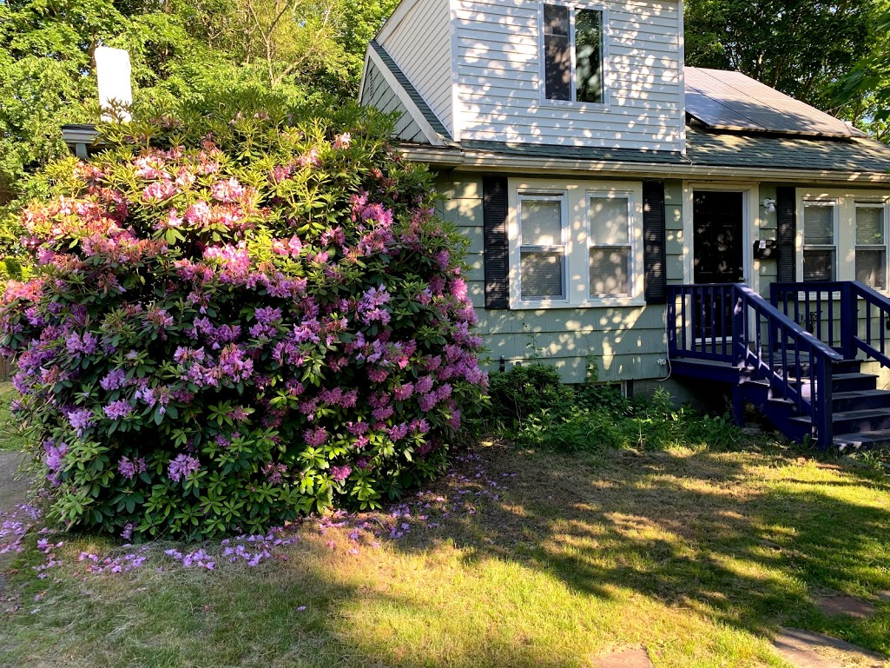

This is my house. It was well builtin 1942.
It has suffered neglect by the last owners
I am restoring it; painting, landscaping, and refurbishing/replacing the damaged wood.
Click the links below and take a look at my work.
I have posted the before and after photos.
I never cut corners because I believe that a job done right means less work in the long run.
Plese feel free to contact me about your own refurbishment projects

- See a fresh coat of paint
- See exterior refurbishment
- See landscaping